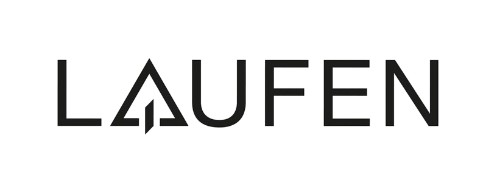
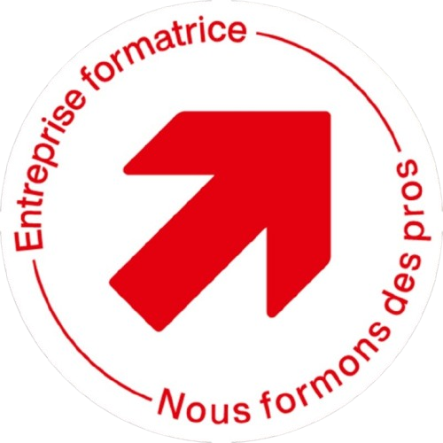

01 / CHAUFFAGE
Une chaleur
bien pensée.
Installation et entretien de systèmes de chauffage fiables, pour un confort constant dans votre logement ou votre entreprise.
Chauffage, sanitaire et ventilation : des installations pensées avec précision, réalisées pour durer.
Chaque bâtiment a ses exigences. Nous apportons des solutions fiables en chauffage, sanitaire et ventilation, avec une attention constante portée aux détails et à la durabilité.
De la construction neuve à la rénovation, notre savoir-faire accompagne votre projet de la réflexion à la réalisation.
Notre approche ↗Une réponse adaptée à votre bâtiment, à vos usages et à votre confort au quotidien.
Installation et entretien de systèmes de chauffage fiables, pour un confort constant dans votre logement ou votre entreprise.
Des installations sanitaires modernes et fonctionnelles, conçues pour allier hygiène, praticité et longévité.
Des solutions de ventilation efficaces pour améliorer la qualité de l’air et créer un climat intérieur agréable.


« Le bon résultat se voit.
La qualité se ressent
chaque jour. »
Des choix techniques réfléchis. Une exécution soignée. Des installations sur lesquelles vous pouvez compter.
Un aperçu concret des installations présentées par VALB-THERM, du local technique aux finitions sanitaires.
Nous privilégions le dialogue, la précision et le travail bien fait. Parce qu’une installation réussie commence par la compréhension de votre projet.
Présentez-nous votre projet ↗Une formation CFC et un Brevet fédéral pour des solutions maîtrisées.
Une réponse pensée selon vos besoins et les contraintes de votre bâtiment.
Des matériaux modernes et un travail précis, réalisé avec professionnalisme.
Votre sécurité, votre confort et votre satisfaction guident notre travail.
Une construction, une rénovation ou une question technique ? Décrivez-nous votre besoin et nous prendrons contact avec vous.